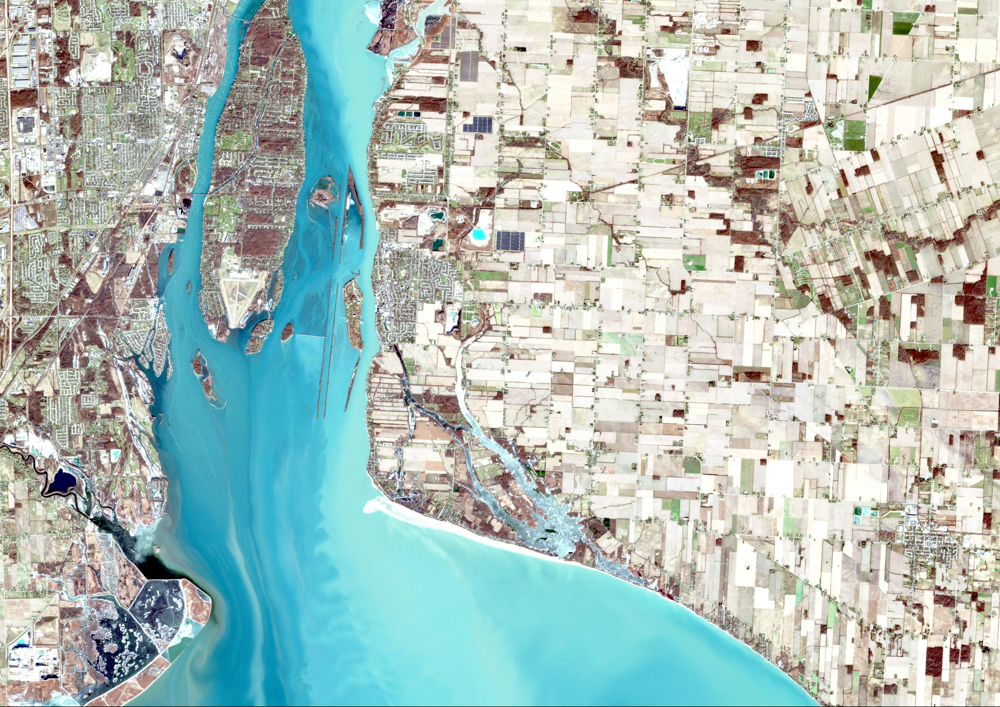

Kaduna
Experience associated with KADGIS and related digitisation, mapping, street naming and house numbering processes, together with institutional and urban-infrastructure delivery support.
EXPERIENCE
IGSL and its project teams have delivered and supported assignments spanning urban addressing, GIS and mapping, signage and wayfinding, institutional frameworks, ICT infrastructure, procurement support and public-sector programme delivery.
SELECTED EXPERIENCE
Participation in urban addressing, street naming and house numbering initiatives in the FCT, alongside experience connected with AGIS digitisation, mapping and georeferencing processes. IGSL's wider team experience also includes procurement support and digital-infrastructure initiatives within the FCT.
Experience associated with KADGIS and related digitisation, mapping, street naming and house numbering processes, together with institutional and urban-infrastructure delivery support.
Contribution to the organisational and business framework for the Lagos State Signage and Advertising Agency (LASAA), together with monitoring and evaluation relating to outdoor advertising management, street directional signage, landscaping and beautification.
Delivery experience in street naming and house numbering, together with monitoring and revenue-management frameworks for outdoor installations and related urban systems.
Experience including bus shelters, gantries, roundabout beautification and street-directional signage, as well as technology procurement assignments.
Experience in enterprise and residential digital networks, digital-inclusion initiatives, technology procurement and implementation support.
LOCATION & DATA
CURRENT FLAGSHIP PROGRAMMES

ICT & DIGITAL INFRASTRUCTURE
A CONTINUUM OF CAPABILITY
IGSL's current work builds on a long-running foundation in public-sector systems, urban infrastructure, GIS, addressing, institutional design and technology delivery.
SAIP extends that experience into integrated location intelligence and digital public infrastructure, while PADVS demonstrates IGSL's evolution into proprietary platform development and regional programme origination.